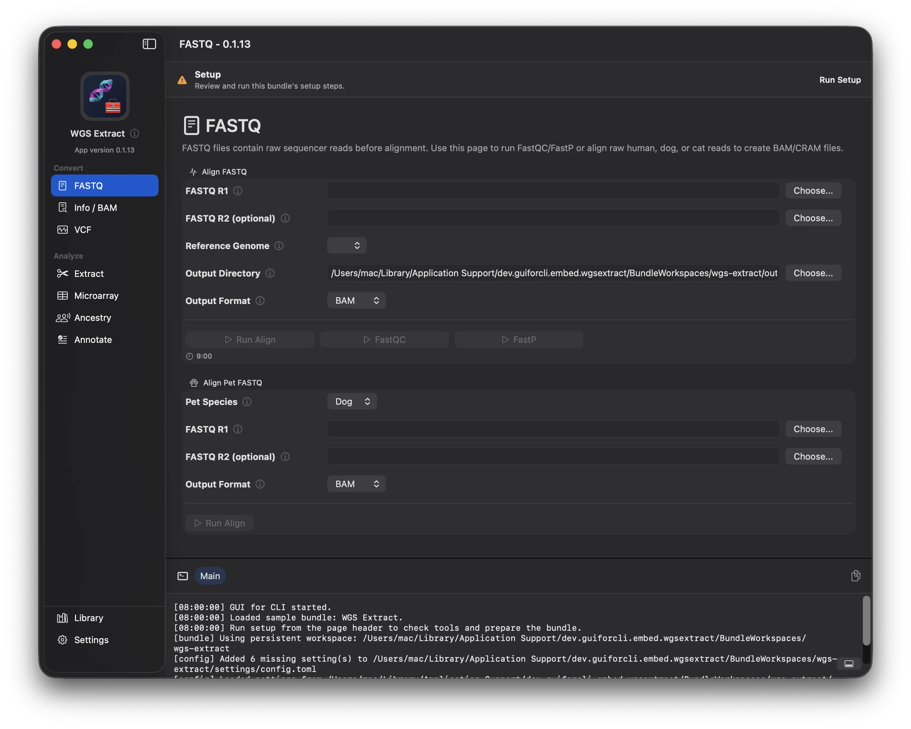
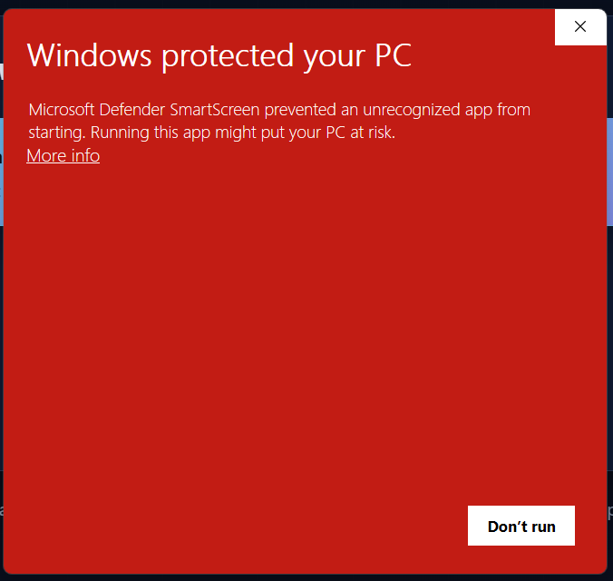
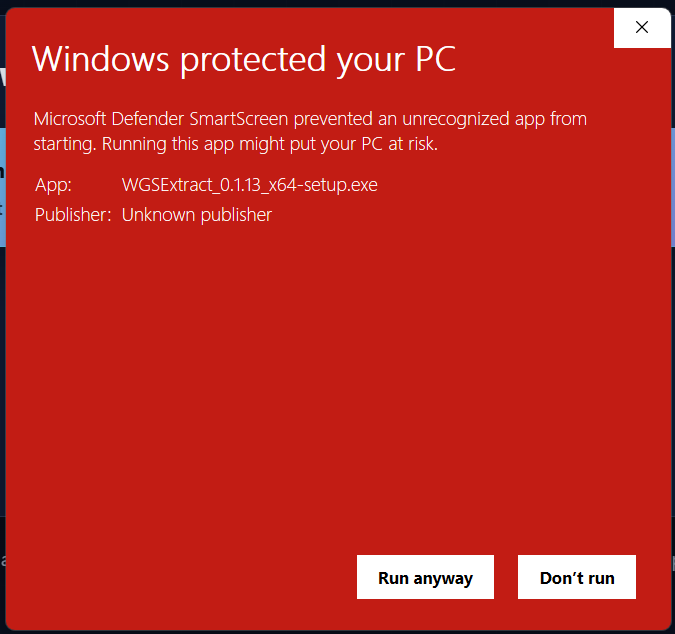

Windows
Download installer
64-bit .exe setup
Windows SmartScreen may appear. See the two-click install note.
Simple desktop downloads
WGSExtract v6 Alpha
A preview desktop app for working with whole-genome sequencing files. Pick your platform and install the latest alpha build.

Current alpha release: v0.1.13. Linux builds include AppImage, Ubuntu, Fedora, and Arch packages.
Windows install note
If SmartScreen appears, continue in two clicks.
WGSExtract v6 Alpha is new, free, open-source software. Microsoft Defender SmartScreen can warn about newer apps until enough people have downloaded and run them. If you downloaded the installer from this project, press More info, then Run anyway.
Step 1
Press More info.

Step 2
Press Run anyway.

Related rough sites
This site and the WGSExtract CLI website are rough AI-generated websites while WGSExtract v6 Alpha is still being assembled.
More information
The download page stays intentionally small. The GUI for CLI project background, frontend notes, experiment history, and documentation map live on the other pages.
WGSExtract story Frontends Documentation